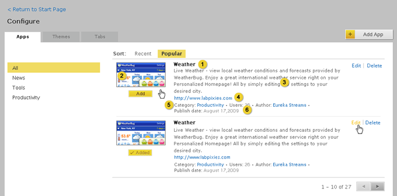
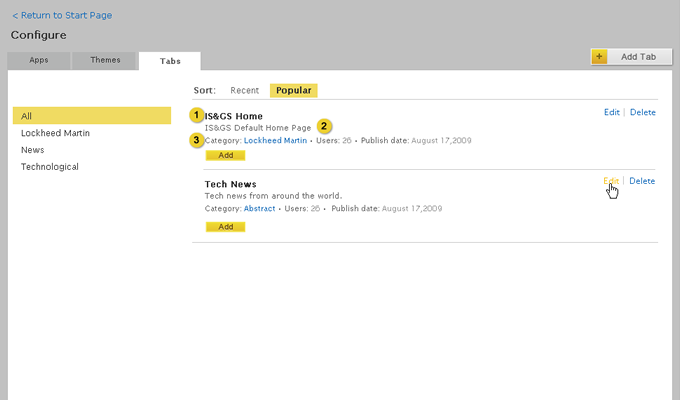

Home > Product Specification > Features > View and Manage gallery items
View and Manage gallery items
Follow and Subscribe to Streams
View and Search a Stream
Overview
Gallery can be updated with default apps, themes and tabs. Eureka administrators are
responsible for vetting the item available within the gallery for their employees.
Conditions of satisfaction
Browse
- The knowledge worker must be able to browse a list of apps, themes and tabs by recently
published, popularity or category.
- The knowledge worker must be able to view an app’s title, thumbnail, website URL,
description, user count, author, category, and publish date.
- The knowledge worker must be able to view a theme’s title, thumbnail, website URL,
description, user count, author, category, and publish date.
- The knowledge worker must be able to view a tab’s title, description, user count,
category, and publish date.
- The knowledge worker must be able to copy a snapshot of a tab in the gallery onto his
start page when adding a tab.
Manage apps
- The Eureka administrator must be able to add apps that adhere to the Google App
Specification to the gallery
- The Eureka administrator must be able to specify category for any app in the gallery.
- The Eureka administrator must be able to remove apps from the gallery.
- The Eureka administrator must be able to modify the URL for a published app.
Manage themes
- The Eureka administrator must be able to add themes that adhere to the theme schema to
the gallery
- The Eureka administrator must be able to specify category for any theme in the gallery.
- The Eureka administrator must be able to remove themes from the gallery.
- The Eureka administrator must be able to modify the URL for a published theme.
Manage tabs
- The Eureka administrator must be able to add any tab on his start page to the gallery.
- The Eureka administrator must be able to specify category for any tab in the gallery.
- The Eureka administrator must be able to remove tabs from the gallery.
- The Eureka administrator must be able to specify and modify a description for a
published tab.
User Experience
Browse
Browsing apps, themes and tabs

- Displays available apps
- Displays available themes
- Displays available tabs
- Sorts by the most recently added
- Sorts by the most popular
- Sorts by category
Viewing the details of an app

- Title
- Thumbnail
- Description
- Website URL
- Category, User count, and Author
- Publish Date
Viewing the details of a theme

- Title
- Thumbnail
- Description
- Category, User count, Author, Published Date
Viewing the details of a tab

- Title
- Description
- Category, User count, Publish Date
Manage
Viewing and Managing Apps

- Opens the add app form.
- Hovering over the app thumbnail, title, description or meta data displays the edit link. Clicking edit displays the edit app form.
- Hovering over the app thumbnail, title, description or meta data displays the Delete
link. Clicking the Delete link removes the app from the gallery. When the Eureka administrator clicks the Delete link a popup window is displayed asking the user: “Are you sure you want to delete this app? Deleting this app will remove it from the start page of every user that has added it to a tab.” If the app is deleted a feedback message is displayed saying: “The [app name] app has been deleted”.
- Adds the app to the user’s start page.
Add an app to the gallery

- Drop down menu containing a list of app categories
- Input field for app XML address
- Submits the form and returns the Eureka administrator back to the configure page
defaulted to the all apps view. A feedback message “Your app has been successfully added” is also displayed at the top of the page with a close link next to it.
- Discards the changes made to the form and returns the Eureka administrator back to the
configure page.
Editing and removing apps

- Populated with the app category.
- Populated with URL to app XML file.
- Saves changes to the form and returns the Eureka administrator back to the configure page
defaulted to the all apps view. A feedback message “Your app has been successfully saved” is also displayed at the top of the page with a close link next to it.
- Discards the changes made to the form and returns the Eureka administrator back to the
configure page.
Managing and Viewing Themes

- Opens the add theme form.
- Hovering over the theme thumbnail, title, or meta data displays an edit link. Clicking edit displays the edit theme form.
- Hovering over the theme thumbnail, title, or meta data displays the Delete link. Clicking
the Delete link removes the theme from the gallery. When the Eureka administrator clicks the Delete link a popup window is displayed asking the user: “Are you sure you want to delete this theme? Deleting a theme will remove it from the start page and apply the default theme for every user that has applied it.” If the theme is deleted a feedback message is displayed saying: “The [theme name] theme has been deleted” with a close link next to it.
- Applys the theme to the user’s start page.
Add a Theme to the gallery

- Drop down menu containing a list of theme categories
- Input field for theme XML address
- Submits the form and returns the Eureka administrator back to the configure page
defaulted to the all themes view. A feedback message “Your theme has been successfully added” is also displayed at the top of the page with a close link next to it.
- Discards the changes made to the form and returns the Eureka administrator back to the
configure page.
Editing and removing a theme

- Populated with the theme category.
- Populated with URL to theme XML file.
- Saves changes to the form and returns the Eureka administrator back to the configure page
defaulted to the all themes view. A feedback message “Your theme has been successfully saved” is also displayed at the top of the page with a close link next to it.
- Discards the changes made to the form and returns the Eureka administrator back to the
configure page.
Managing and viewing a tab

- Opens the add theme form.
- Hovering over the theme thumbnail, title, or meta data displays an edit link. Clicking edit displays the edit theme form.
- Hovering over the theme thumbnail, title, or meta data displays the Delete link. Clicking
the Delete link removes the theme from the gallery. When the Eureka administrator clicks the Delete link a popup window is displayed asking the user: “Are you sure you want to delete this theme? Deleting a theme will remove it from the start page and apply the default theme for every user that has applied it.” If the theme is deleted a feedback message is displayed saying: “The [theme name] theme has been deleted” with a close link next to it.
- Adds the tab to the user’s start page.
Add a tab to the gallery

- Drop down menu containing a list of tab’s from the Eureka administrator’s start page.
- Description of the tab.
- Drop down menu containing a list of theme categories
- Submits the form and returns the Eureka administrator back to the configure page
defaulted to the all tabs view. A feedback message “Your tab has been successfully added” is also displayed at the top of the page with a close link next to it.
- Discards the changes made to the form and returns the Eureka administrator back to the
configure page.
Editing and removing a tab

- Drop down menu containing a list of tab’s from the Eureka administrator’s start page.
- Description of the tab.
- Drop down menu containing a list of theme categories
- Submits the form and returns the Eureka administrator back to the configure page
defaulted to the all tabs view. A feedback message “Your tab has been successfully saved” is also displayed at the top of the page with a close link next to it.
- Discards the changes made to the form and returns the Eureka administrator back to the
configure page.
Test Plan
Browse
- Verify a knowledge worker can browse a list of apps by recently published, popularity
or category
- Verify the ability to browse recently published apps in the gallery
- Verfiy the publish dated reflect this view
- Verify the ability to add an app from the recent view
- Verify the ability to browse apps in the gallery by popularity
- Verify the user counts reflect this view
- Verify the ability to add an app from the popular view
- Verify the ability to browse apps in the gallery by category
- Verify the ability to add an app from a specific category
- Verify a knowledge worker can browse a list of themes by recently published, popularity
or category
- Verify the ability to browse recently published themes in the gallery
- Verfiy the publish dated reflect this view
- Verify the ability to add a theme from the recent view
- Verify the ability to browse themes in the gallery by popularity
- Verify the user counts reflect this view
- Verify the ability to add a theme from the popular view
- Verify the ability to browse themes in the gallery by category
- Verify the ability to add a theme from a specific category
- Verify a knowledge worker can browse a list of tab by recently published,
popularity or category
- Verify the ability to browse recently published tabs in the gallery
- Verfiy the publish dated reflect this view
- Verify the ability to add a tab from the recent view
- Verify the ability to browse tabs in the gallery by popularity
- Verify the user counts reflect this view
- Verify the ability to add a tab from the popular view
- Verify the ability to browse tabs in the gallery by category
- Verify the ability to add a tab from a specific category
- Verify a knowledge worker can view an app’s attributes
- Verify the title, thumbnail, website URL, description, user count, author, category and date published are present
- Verify all of these attributes are present for all apps in the gallery
- Verify a knowledge worker can view a theme’s attributes
- Verify the title, thumbnail, website URL, description, user count, author, category and date published are present
- Verify all of these attributes are present for all themes in the gallery
- Verify a knowledge worker can view a tab’s attributes
- Verify the title, description, user count, category and date published are present
- Verify all of these attributes are present for all tab’s in the gallery
- Verify a knowledge worker can confirm the ability to copy a snapshot of a tab from the
gallery to a start page tab
- Verify all of the correct apps are preset on the added tab
Manage Apps
- Verify a Eureka administrator can add apps to the gallery
- Verify there is a link from the gallery directing the user to a form to upload an app
- Verify error handling is present when required fields are not populated
- Verify a category can be selected and associated with the app
- Verify a theme that is uploaded must adhere to the Google app specification
- Verify that if a app does not adhere there is error handling
- Verify there is a link which will direct the user to the app specification guide
- Verify a Eureka administrator can modify the URL for a published app
- Verify the category can be changed for an app that has been uploaded to the gallery
- Verify the URL can be changed for an app that has been uploaded to the gallery
- Verify there is error handling in the edit mode
- Verify a Eureka administrator can remove apps from the gallery
- Verify a published app can be removed
- Verify there is removal confirmation
- Verify the app is removed from the gallery, but is not removed from any tabs of users with that app currently applied
Manage Themes
- Verify a Eureka administrator can add themes to the gallery
- Verify there is a link from the gallery directing the user to a form to upload an theme
- Verify error handling is present when required fields are not populated
- Verify a category can be selected and associated with the theme
- Verify a theme that is uploaded must adhere to the Eureka theme schema
- Verify that if a theme does not adhere there is error handling
- Verify there is a link which will direct the user to the theme specification guide
- Verify a Eureka administrator can modify the URL for a published theme
- Verify the category can be changed for an theme that has been uploaded to the gallery
- Verify the URL can be changed for an theme that has been uploaded to the gallery
- Verify there is error handling in the edit mode
- Verify a Eureka administrator can remove themes from the gallery
- Verify a published theme can be removed
- Verify there is removal confirmation
- Verify the theme is removed from the gallery, but is not removed from any tabs of users with that app currently applied
Manage Tabs
- Verify a Eureka administrator can add tabs to the gallery
- Verify there is a link from the gallery directing the user to a form to upload an tab
- Verify error handling is present when required fields are not populated
- Verify a category can be selected and associated with the tab
- Verify a Eureka administrator can remove tab from the gallery
- Verify a published tab can be removed
- Verify there is removal confirmation
- Verify the tab is removed from the gallery, but is not removed from any tabs of users with that app currently applied
| PAGE CONTENTS
Version 1.2
Documentation is also available for all of the following versions:
0.9 | 1.0 | 1.1 | 2.0
|